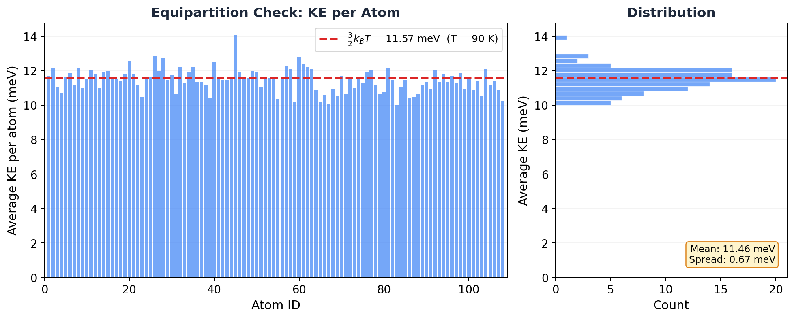

6.4 The Equipartition Theorem¶
Huang, Statistical Mechanics 2ed, Section 6.4
I've been using this formula for years without knowing why¶
Here's something embarrassing. Every time I run a simulation, LAMMPS prints a temperature. I look at it, I nod, I move on. But for the longest time I had no idea where that number actually comes from. Like, I know the formula:
I've typed it a hundred times. But why? Why kinetic energy? Why the factor of 3? Why not 2 or 6 or 47?
The answer is the equipartition theorem. And once you see it, you can't unsee it. It's been hiding inside almost every thermodynamic quantity your simulation computes.
Why should you care?¶
Equipartition is the reason your simulation can measure temperature at all. But it doesn't stop there. This one theorem is also why:
- The virial pressure formula works
- Rigid bond constraints (SHAKE/RATTLE) change your temperature calculation
- You can diagnose equilibration by checking if all atoms have the same average KE
- The classical heat capacity of a solid is \(3Nk_B\) (the Dulong-Petit law)
Energy, temperature, pressure, heat capacity. One theorem connects all of them. It's the Swiss army knife of classical statistical mechanics.
The bad intuition: "temperature is how fast atoms move"¶
Kind of. But not really.
Think about it. If one atom in your simulation is screaming across the box at Mach 5 while every other atom is sitting still, does the system have a high temperature? No. That's just one excited atom. Temperature is a collective property. It only makes sense when energy has had time to spread out.
The equipartition theorem tells you exactly what "spread out evenly" means. And it's surprisingly specific.
The general result (then we unpack it)¶
Huang proves the generalized equipartition theorem:
where \(x_i\) can be any coordinate or momentum (\(q_i\) or \(p_i\)), and \(\delta_{ij}\) is the Kronecker delta (1 if \(i = j\), 0 otherwise).
That's compact. That's abstract. And if you're like me, you read it three times and it still didn't click.
Let's unpack it with the case you actually care about.
Where the temperature formula comes from¶
Ready? Let's do this.
For \(N\) particles with mass \(m\), the kinetic energy part of the Hamiltonian is:
Now pick one momentum component. Just one. Say \(p_1\). Plug \(x_i = p_1\), \(x_j = p_1\) into the theorem:
What's \(\frac{\partial \mathcal{H}}{\partial p_1}\)? Take the derivative of \(\frac{p_1^2}{2m}\) with respect to \(p_1\). That's just \(\frac{p_1}{m}\). So:
Divide both sides by 2:
That's the kinetic energy in one direction for one particle. And the theorem says it equals exactly \(\frac{1}{2}kT\). Not approximately. Exactly.
Now here's the beautiful part. There's nothing special about \(p_1\). Every momentum component gets the same treatment. There are \(3N\) of them (3 directions per atom, \(N\) atoms). So the total kinetic energy is:
Flip it around:
Done. Beautiful.
That's where the formula comes from. The factor of 3? Three directions of motion. The factor of 2? Kinetic energy is quadratic in momentum. That's it.
Key Insight
Each quadratic term in the Hamiltonian contributes exactly \(\frac{1}{2}kT\) to the average energy. Kinetic energy has \(3N\) quadratic terms (one per momentum component), so it contributes \(\frac{3}{2}NkT\) total. This is the "equi" in "equipartition": energy is partitioned equally among all quadratic degrees of freedom. No favorites. No exceptions. Every degree of freedom gets its fair share.
If you followed that derivation, congratulations. You just figured out why LAMMPS can turn velocities into a temperature. Not bad for a few lines of algebra.
What it means for your simulation¶
Here's the part the textbook doesn't tell you. Equipartition has consequences that show up every time you run LAMMPS, and most people never think about them.
Temperature: it's just a KE sum¶
When LAMMPS computes temperature, it literally loops over every atom, sums up \(\frac{1}{2}m v_i^2\) in all three directions, and divides by \(\frac{3}{2}Nk_B\). The thermo_style keyword temp is nothing more than equipartition applied to your velocity array. That's all it is.
The virial and pressure¶
The equipartition theorem has a sibling. Apply it to position coordinates instead of momenta:
Now, Hamilton's equations say \(\frac{\partial \mathcal{H}}{\partial q_i} = -\dot{p}_i\). That's the negative of the force on degree of freedom \(i\). Sum over all \(3N\) coordinates:
The left side is what classical mechanics calls the virial. And from here, you can derive the pressure formula that LAMMPS uses:
First term: the ideal gas part (kinetic energy bouncing off walls). Second term: the correction from interatomic forces (atoms pulling on each other). Both come from equipartition. Same theorem, different variable.
Frozen degrees of freedom: the SHAKE/RATTLE trap¶
Here's a practical gotcha that has bitten people (myself included).
If you use SHAKE or RATTLE to constrain bond lengths (super common in water simulations like SPC/E or TIP3P), you're removing degrees of freedom. Each constraint freezes one out. Gone. Goodbye buddy.
For \(N\) water molecules with 3 constraints each (2 O-H bonds + 1 H-O-H angle), the degrees of freedom drop from \(9N\) (3 atoms per molecule, 3 directions each) to \(9N - 3N = 6N\).
So the temperature formula changes. The denominator isn't \(9N\) anymore.
Common Mistake
If you constrain bonds but don't adjust the degrees of freedom in your temperature calculation, your temperatures will be systematically wrong. For \(N\) rigid water molecules, the correct formula is \(T = \frac{2}{6Nk_B}\langle KE \rangle\), not \(\frac{2}{9Nk_B}\langle KE \rangle\). LAMMPS handles this automatically when you use fix shake, but if you're writing your own analysis script? Double check. I'm serious.
Equipartition as an equilibration diagnostic¶
This one's my favorite practical application.
In equilibrium, equipartition says every atom should have the same time-averaged kinetic energy. Not instantaneously (atoms are constantly exchanging energy through collisions), but on average over a long trajectory. If some atoms are systematically hotter or colder than others, your system hasn't equilibrated. Period.
Let me show you. I computed the time-averaged KE for each of the 108 argon atoms in our NVE simulation from section 6.1:

Every atom clusters tightly around the predicted \(\frac{3}{2}k_BT\) line. That's not a coincidence. That's equipartition working exactly as advertised.
MD Connection
Try this on your own simulations. Compute the time-averaged KE for each atom individually. In equilibrium, they should all cluster tightly around \(\frac{3}{2}kT\). If one group of atoms is systematically hotter (common at interfaces or near walls), you've got an equilibration problem. This is one of the most underused diagnostics in MD. Seriously, go check.
The classical heat capacity¶
If a system's Hamiltonian has \(f\) quadratic terms (counting both kinetic and potential), then:
Monatomic ideal gas? \(f = 3N\) (kinetic only, no springs to store potential energy). So \(C_V = \frac{3}{2}Nk\).
Harmonic solid? Now you've got springs. \(f = 6N\) (3N kinetic + 3N potential). So \(C_V = 3Nk\). That's the Dulong-Petit law, and it works surprisingly well for most solids at room temperature.
See the pattern? Count the quadratic terms, multiply by \(\frac{1}{2}kT\). That's your energy. Take the derivative with respect to \(T\). That's your heat capacity. Simple.
The classical paradox (and where everything breaks)¶
Huang ends with a sharp observation, and it's worth sitting with for a moment.
In classical physics, you can always keep zooming in. Atoms are made of electrons and nuclei. Nuclei are made of protons and neutrons. Those are made of quarks. And so on. Each new level adds degrees of freedom. Each degree of freedom contributes \(\frac{1}{2}kT\).
So the heat capacity should be infinite.
That's not a hand-wavy worry. That's a real paradox, and classical physics has no answer. Zero. None.
Quantum mechanics saves us. In quantum mechanics, degrees of freedom only contribute when there's enough thermal energy to excite them. At low temperatures, high-energy modes "freeze out" and stop contributing. That's why the heat capacity of a real solid drops toward zero as \(T \to 0\), violating the classical prediction.
The classical prediction says \(C_V = 3Nk\) at all temperatures. At room temperature? Sure, works great. At 10 K? Not even close. The whole framework collapses.
Takeaway¶
Every quadratic degree of freedom gets exactly \(\frac{1}{2}kT\) of energy. That one fact gives you the temperature formula, the virial pressure, the classical heat capacity, and a powerful diagnostic for checking whether your simulation is actually in equilibrium. One theorem. Four results. Not bad.
Check Your Understanding
- Your labmate forgot to subtract the SHAKE constraints when computing temperature for TIP3P water. Is their reported \(T\) too hot or too cold? Roughly by how much?
- Equipartition says a harmonic solid has \(C_V = 3Nk\) at any temperature. But real solids have \(C_V \to 0\) as \(T \to 0\). What sets the temperature where classical physics falls apart?
- You simulate dense liquid argon near its triple point. The atoms are packed tight and strongly attracting each other. Is the virial contribution to pressure positive or negative? What about for a hot, dilute gas?
- You're simulating a protein in water and you check per-atom kinetic energies. The active-site atoms are systematically colder than the bulk water. Is this a discovery or a bug?